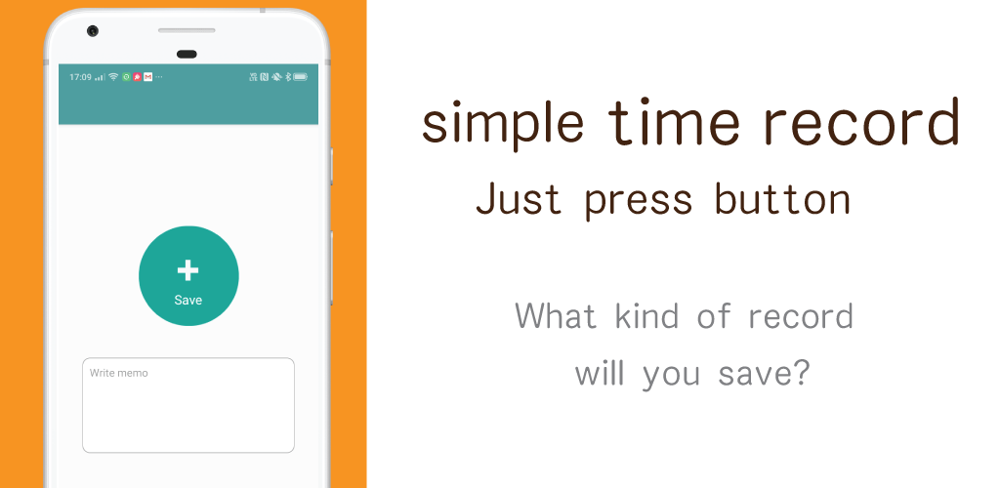
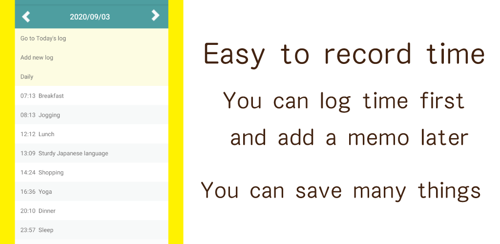

Now so many people use this app!
This app 7,255 installed by 2020/9.
So Recently I received so many message from users, that make me think users increacing. I am so glad. Thank you so much.
So many countries users uses this, for example...
United States, United Kingdom, Australia, Canada, Germany, Japan, Sweden, United Arab Emirates, China...etc
I often receive messages from users.
I as developer can't speak well English, So I have try in English somehow.
This app often used for "Self management"
This app's users often use for...
・track your day as own self management
・record sick situation or when drink medicine
...etc. it seems that everyone uses the app for various other purposes.
I recommend you to take a look at the review section of the application, as it will be helpful as to how other people are using it.
As a developer, I often get interested in using it this way.
If you like it, I'd be happy if you could use the review to tell me how to use your app.
I'm very curious about how do you use the app for what.
By the way, it is a highly recommended app for those who want the simplicity of "I want to record immediately after opening the screen!",
but if you want multi-functionality, other apps may be good.
If you feel like you haven't tried it once, you should try other apps and find the one that suits you.